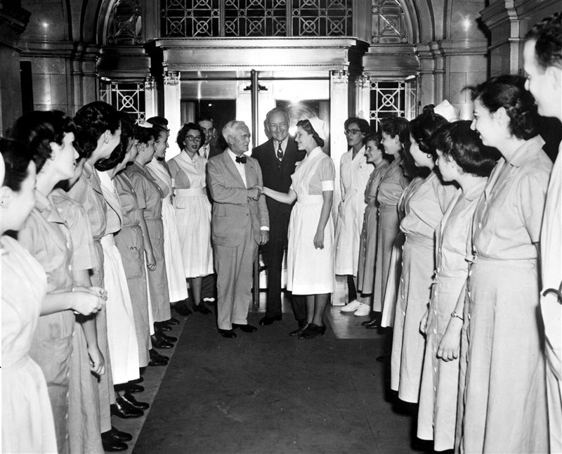

Alexander Fleming
The father of penicilline

Fleming during the visit to New York Hospital
Time line of Alexander Flemming
- 1881 - He was born on August 6th.
- 1928 - He discovered the penicilline.
- 1945 - He wont the Nobel Prize of Medicine.
- 1950 - He met Pope PIO XII.
- 1955 - He died at the age of 74.